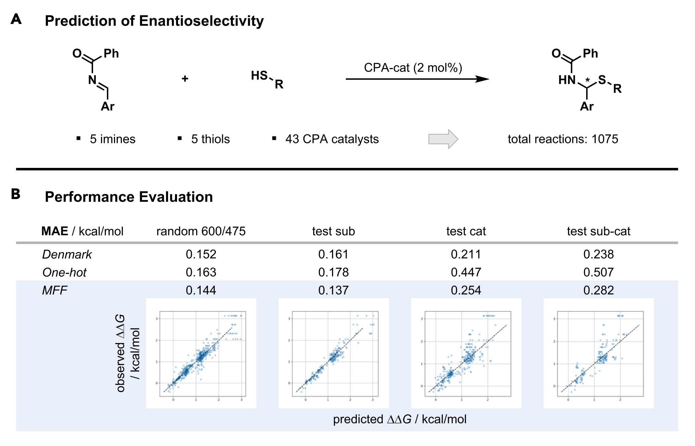
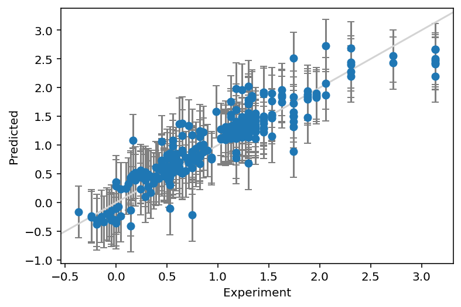
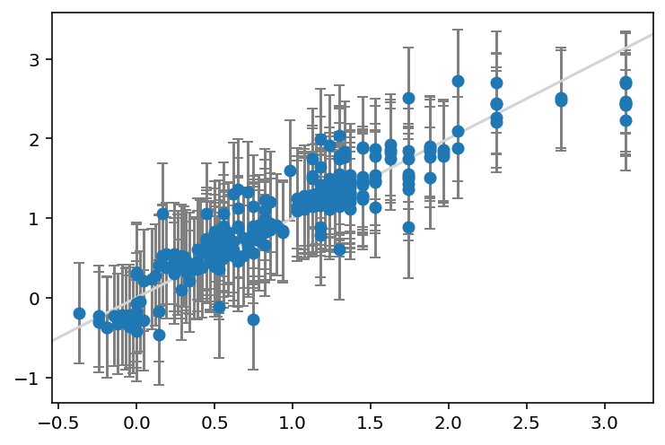
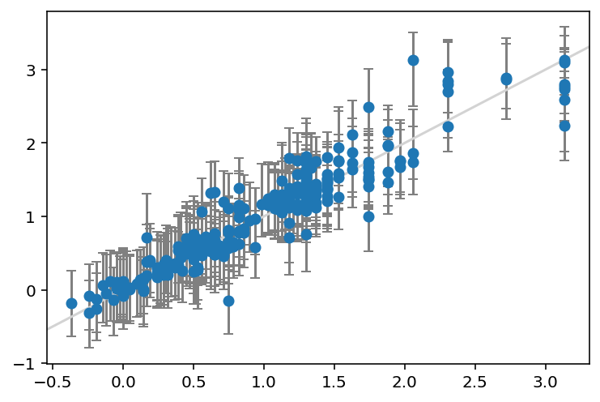

import pandas as pd
import numpy as np
from rdkit import Chem
from rdkit.Chem.rdFingerprintGenerator import GetMorganGenerator
from sklearn.model_selection import train_test_split
# Load dataset
df = pd.read_excel("denmark.xlsx")
y = df["Output"].values
# Generate fingerprints
gen = GetMorganGenerator(radius=3, fpSize=512)
fp_catalyst = df["Catalyst"].apply(
lambda x: gen.GetFingerprintAsNumPy(Chem.MolFromSmiles(x))
)
fp_imine = df["Imine"].apply(lambda x: gen.GetFingerprintAsNumPy(Chem.MolFromSmiles(x)))
fp_thiol = df["Thiol"].apply(lambda x: gen.GetFingerprintAsNumPy(Chem.MolFromSmiles(x)))
X = np.hstack(
[np.vstack(i) for i in [fp_catalyst.values, fp_imine.values, fp_thiol.values]]
)
# Split data
X_train, X_test, y_train, y_test = train_test_split(X, y, random_state=42)Prediction intervals for any machine learning model
How to construct prediction intervals with the Jackknife+ using the MAPIE package
machine learning
Kjell Jorner ![]()
The generalization error of a machine learning model is often given as the mean absolute error (MAE) or the root mean squared error (RMSE). Sometimes, the goodness of fit is given as the coefficient of determination, R2. While these metrics give an impression of the accuracy of the model on average, they do not really give a good representation of the error that can be expected for a single new prediction. Ironically, that is probably the quantity that the end user of the model is most interested in.
Technically speaking, the MAE gives the average error of the model for new data points drawn from the same “distribution” as the training set. That would correspond to the average error for many predictions, while each individual prediction can have much larger error. The prediction interval is used to quantify the uncertainty of an individual prediction. For some models, such as (multivariate) linear regression, there is an analytic expression for the prediction interval. For Bayesian methods, such as Gaussian Process Regression, the prediction intervals are readily obtained together with the model predictions. For other types of machine learning models, it’s not immediately obvious how to obtain prediction intervals as analytic expressions are not available.
One approach is conformal prediction, implemented in for example the nonconformist Python package. We will not investigate conformal prediction further in this blog post, but instead focus on a method called the Jackknife+1. It is similar to conformal prediction, and an up-to-date Python implementation is available in the MAPIE package. I actually wrote my own implementation of the Jackknife+ as part of my modelling of the SNAr reaction2, and was now thinking of packaging it up when I discovered that the people behind MAPIE had already done a much better job than I could expect to do.
In this blog post, we will test out MAPIE and compare its prediction intervals to those from normal linear regression as well as Bayesian linear regression.
Dataset
We will use a dataset from the Denmark group used to construct machine learning models for prediction of enantioselectivity3. The dataset that we use is actually taken from another paper, by the Glorius group4. The reaction is shown in Figure 1 together with the original results of the Denmark group as well as those from the MFF approach by the Glorius group.

First we load the dataset and generate features for the reactions. In this case, we keep things simple and just generate Morgan/ECFP fingerprints with a radius of 3 and a size of 512, for computational efficiency. Actually, I learned about GetMorganGenerator when writing this post. It makes it very easy to get the fingerprints as NumPy arrays using the GetFingerprintAsNumPy method.
We’ll do a simple train-test split, where we use the train set to derive the prediction intervals, and the test set to check how good they are.
Analytic prediction intervals from linear regression
The first model to use when trying to understand a statistical concept is usually linear regression. We can always complicate things with non-linear models, but the concepts themselves can be intuitively understood better with a simpler model.
First we just do a quick cross-validation on the entire dataset to see that the model is reasonable.
from sklearn.linear_model import LinearRegression
from sklearn.model_selection import cross_val_score
from sklearn.metrics import make_scorer, mean_absolute_error
import scipy.stats
est = LinearRegression()
scores = cross_val_score(est, X, y, cv=10, scoring=make_scorer(mean_absolute_error))
sem = scipy.stats.sem(scores)
print(f"Mean absolute error with 95% CI: {np.mean(scores):.3f} ± {sem * 1.96:.3f}")Mean absolute error with 95% CI: 0.187 ± 0.010To put this error into context, it’s a bit worse than what Denmark (MAE: 0.152) or Glorius (MAE: 0.144) got with their methods, although a more rigorous comparison would need to be done. We are anyway trying to keep things simple here.
Now we want to get the prediction intervals. As mentioned above, they are readily available with linear regression. However, due to the aforementioned non-interest in prediction intervals from most machine learning practitioners, we cannot get them from scikit-learn but have to compute them ourselves. Here we use the recipe from the blog post on Machine Learning Mastery.
import matplotlib.pyplot as plt
from mapie.metrics import regression_coverage_score
# Fit the scikit-learn model
est = LinearRegression()
est.fit(X_train, y_train)
y_train_pred = est.predict(X_train)
y_test_pred = est.predict(X_test)
# Compute prediction intervals
sum_of_squares = np.sum((y_train - y_train_pred) ** 2)
std = np.sqrt(1 / (len(y_train) - 2) * sum_of_squares)
# Plot the prediction intervals
y_err = np.vstack([std, std]) * 1.96
plt.errorbar(y_test, y_test_pred, yerr=y_err, fmt="o", ecolor="gray", capsize=3)
plt.plot(plt.xlim(), plt.xlim(), color="lightgray", scalex=False, scaley=False)
plt.xlabel("Experiment")
plt.ylabel("Predicted")
# Print out statistics
mae_test = mean_absolute_error(y_test, y_test_pred)
print(f"MAE: {mae_test:.3f}")
print(f"Width of 95% prediction interval: {np.mean(y_err) * 2:3f}")
coverage = regression_coverage_score(
y_test, y_test_pred - std * 1.96, y_test_pred + std * 1.96
)
print(f"Coverage: {coverage:.3f}")MAE: 0.204
Width of 95% prediction interval: 0.904925
Coverage: 0.888
We have plotted the true values on the x-axis and the predictions on the y-axis. We have specified a prediction interval at 95%, so we expect the error bars to cover the identity line \(y=x\) in 95% of the cases (a coverage of 0.95).
A prediction interval of ca 0.9 kcal/mol gives completely different sense of how accurate the prediction for a new compound is likely to be. The end user of the model can then decide whether they are comfortable with the uncertainty of the prediction. The right level of confidence could of course be adjusted depending on the application – 95% is not god-given. We also see that the coverage is a bit lower at 0.89 than what we requested, 0.95.
Prediction intervals from Bayesian Ridge Regression
One of my favorite machine learning models is Bayesian ridge regression, a Bayesian version of the tried-and-true ridge regression. It is perfect as a black-box linear baseline model that automatically does regularization and gives prediction intervals.
from sklearn.linear_model import BayesianRidge
# Fit model
est = BayesianRidge()
est.fit(X_train, y_train)
y_test_pred, y_test_std = est.predict(X_test, return_std=True)
# Plot the data with the error bars
y_err = np.vstack([y_test_std, y_test_std]) * 1.96 / 2
plt.errorbar(y_test, y_test_pred, yerr=y_err, fmt="o", ecolor="gray", capsize=3)
plt.plot(plt.xlim(), plt.xlim(), color="lightgray", scalex=False, scaley=False)
# Print out statistics
mae_test = mean_absolute_error(y_test, y_test_pred)
print(f"MAE: {mae_test:.3f}")
print(f"Width of 95% prediction interval: {np.mean(y_err) * 2:3f}")
coverage = regression_coverage_score(
y_test, -y_err[0] + y_test_pred, y_err[1] + y_test_pred
)
print(f"Coverage: {coverage:.3f}")MAE: 0.202
Width of 95% prediction interval: 1.266978
Coverage: 0.937
The Bayesian model has a very similar MAE as the regular linear regression, but the prediction intervals are wider at 1.3 kcal/mol and the coverage is therefore also better at 0.94.
Prediction intervals with MAPIE
Now for the most exciting part, we can use MAPIE to calculate the prediction intervals.
from mapie.regression import MapieRegressor
# Train model
est = LinearRegression()
mapie = MapieRegressor(est, cv=10, agg_function="median")
mapie.fit(X_train, y_train)
y_test_pred, y_test_pis = mapie.predict(X_test, alpha=[0.05])
# Plot the data with the error bars
y_err = np.abs(y_test_pis[:, :, 0].T - y_test_pred)
plt.errorbar(y_test, y_test_pred, yerr=y_err, fmt="o", ecolor="gray", capsize=3)
plt.plot(plt.xlim(), plt.xlim(), color="lightgray", scalex=False, scaley=False)
# Print out statistics
mae_test = mean_absolute_error(y_test, y_test_pred)
print(f"MAE: {mae_test:.3f}")
print(f"Width of 95% prediction interval: {np.mean(y_err) * 2:3f}")
coverage = regression_coverage_score(y_test, y_test_pis[:, 0, 0], y_test_pis[:, 1, 0])
print(f"Coverage: {coverage:.3f}")MAE: 0.204
Width of 95% prediction interval: 1.083446
Coverage: 0.918The MAE of the linear regression model is exactly the same as before - we are only changing the way that we calculate the prediction intervals. Here, the prediction interval width at 1.1 kcal/mol and the coverage of 0.92 is in between the regular linear regression and the Bayesian ridge version.
Note
Now for the interesting part – let’s try a method where we don’t normally get prediction intervals easily.
from sklearn.ensemble import RandomForestRegressor
# Train model
est = RandomForestRegressor(n_estimators=10, random_state=42)
mapie = MapieRegressor(est, cv=10, agg_function="median")
mapie.fit(X_train, y_train)
y_test_pred, y_test_pis = mapie.predict(X_test, alpha=[0.05])
# Plot the data with the error bars
y_err = np.abs(y_test_pis[:, :, 0].T - y_test_pred)
plt.errorbar(y_test, y_test_pred, yerr=y_err, fmt="o", ecolor="gray", capsize=3)
plt.plot(plt.xlim(), plt.xlim(), color="lightgray", scalex=False, scaley=False)
# Print out statistics
mae_test = mean_absolute_error(y_test, y_test_pred)
print(f"MAE: {mae_test:.3f}")
print(f"Width of 95% prediction interval: {np.mean(y_err) * 2:3f}")
coverage = regression_coverage_score(y_test, y_test_pis[:, 0, 0], y_test_pis[:, 1, 0])
print(f"Coverage: {coverage:.3f}")MAE: 0.165
Width of 95% prediction interval: 0.942551
Coverage: 0.937
And voilà, we have the prediction intervals for a random forest model without much effort.
Tip
There are other approaches to getting prediction intervals for random forest, such as quantile regression or Natural Gradient Boosting. There are even more efficient ways of using ensemble models such as Random Forest together with Jackknife+ using the Jackknife+ after Bootstrap approach.5
Conclusions
Prediction intervals are one of the most important pieces of information for an end user of a machine learning model. Unfortunately, they are mostly neglected in practice, with focus instead being placed on the average error of new predictions. Here we went through three examples of easily getting prediction intervals in Python, with application to a reaction prediction problem:
- Methods with analytical expressions, with linear regression as an example
- Bayesian methods, with Bayesian ridge regression as an example
- Model-agnostic methods, with the Jackknife+ as an example
References
(1)
Barber, R. F.; Candès, E. J.; Ramdas, A.; Tibshirani, R. J. Predictive Inference with the Jackknife+. The Annals of Statistics 2021, 49 (1). https://doi.org/10.1214/20-AOS1965.
(2)
Jorner, K.; Brinck, T.; Norrby, P.-O.; Buttar, D. Machine Learning Meets Mechanistic Modelling for Accurate Prediction of Experimental Activation Energies. Chemical Science 2021, 12 (3), 1163–1175. https://doi.org/10.1039/D0SC04896H.
(3)
Zahrt, A. F.; Henle, J. J.; Rose, B. T.; Wang, Y.; Darrow, W. T.; Denmark, S. E. Prediction of Higher-Selectivity Catalysts by Computer-Driven Workflow and Machine Learning. Science 2019, 363 (6424), eaau5631. https://doi.org/10.1126/science.aau5631.
(4)
Sandfort, F.; Strieth-Kalthoff, F.; Kühnemund, M.; Beecks, C.; Glorius, F. A Structure-Based Platform for Predicting Chemical Reactivity. Chem 2020, 6 (6), 1379–1390. https://doi.org/10.1016/j.chempr.2020.02.017.
(5)
Kim, B.; Xu, C.; Barber, R. Predictive Inference Is Free with the Jackknife+-After-Bootstrap. In Advances in neural information processing systems; Larochelle, H., Ranzato, M., Hadsell, R., Balcan, M. F., Lin, H., Eds.; 2020; Vol. 33, pp 4138–4149.
Reuse
Code free to use under an MIT license. For citation, use webpage address and access date.